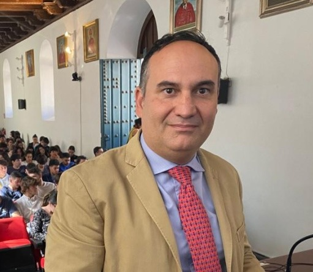

Dr. Ricardo Hernández Rojas
Profesor Titular de Universidad
Área de Economía Financiera y Contabilidad | Dpto. Economía Agraria, Finanzas y Contabilidad
Gestión turística del patrimonio cultural y natural. Gestión empresarial de la gastronomía tradicional y desarrollo de experiencias de oleoturismo. Coordinador de CIGESTUR.
📞 +34 957 21 12 50
📍 Facultad de Derecho y Ciencias Económicas y Empresariales, UCO